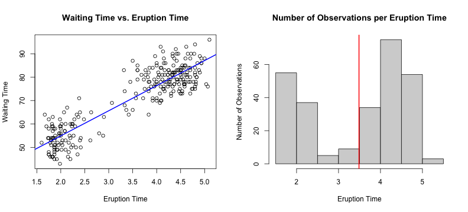

Predicting the Waiting Time after a Geyser Eruption
Kristiaan De Jongh, 11.06.2021

The Geyser Eruption App predicts the waiting time after a geyser eruption until the next eruption.
The data set used is the 'Old Faithful Geyser Data', the 'Old Faithful' being a cone geyser located in the Yellowstone National Park, Wyoming, USA.
The data set contains 272 observations of 2 variables, i.e. the eruption time and the waiting time until the next eruption.
summary(faithful$eruptions)
Min. 1st Qu. Median Mean 3rd Qu. Max.
1.600 2.163 4.000 3.488 4.454 5.100
summary(faithful$waiting)
Min. 1st Qu. Median Mean 3rd Qu. Max.
43.0 58.0 76.0 70.9 82.0 96.0
A scatter plot of the data shows a linear relationship between the eruption time and the waiting time until the next eruption.
The histogram shows the distribution of the observations with an average eruption time 3.5 seconds.

To predict the waiting time after an eruption a linear model is built, putting the waiting time in respect to the eruption time. The coefficients have very small p-values, proving the correlation:
fit <- lm(waiting ~ eruptions, data = faithful)
summary(fit)$coeff
Estimate Std. Error t value Pr(>|t|)
(Intercept) 33.47440 1.1548735 28.98534 7.136015e-85
eruptions 10.72964 0.3147534 34.08904 8.129959e-100
Example: A prediction for the waiting time after an eruption time of 2.5 seconds:
predict(fit, newdata = data.frame(eruptions = c(2.5)))
1
60.2985
Link to the App on shinyapps.io https://kdejongh.shinyapps.io/geyser_app/